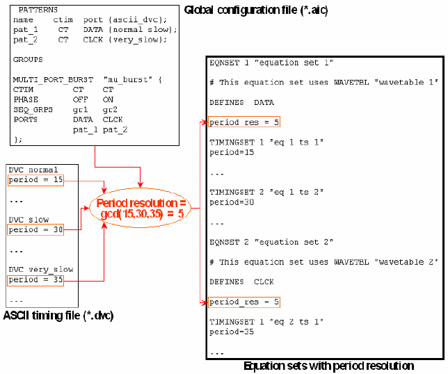

Calculating the Period Resolution for Multi-Port Bursts
If all the periods of all the equation sets that belong to a multi-port burst are defined without variables, then the timing translation tries to determine the period resolution within the admitted range as a common denominator for all these periods. The following example shows this:

Observe that the common period resolution is 5 although the two periods of equation set 1 are also divisible by 7.5.
If you want to prevent the ASCII interface from defining a period resolution for the multi-port burst, you must define the period of at least one timing set with an equation variable.